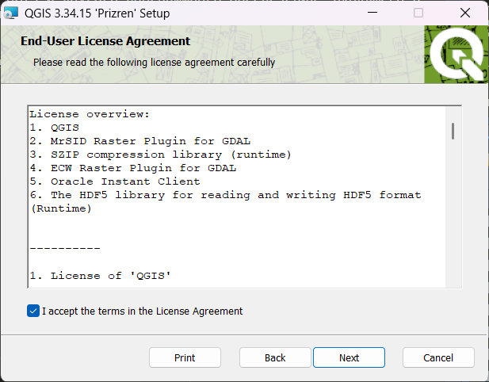
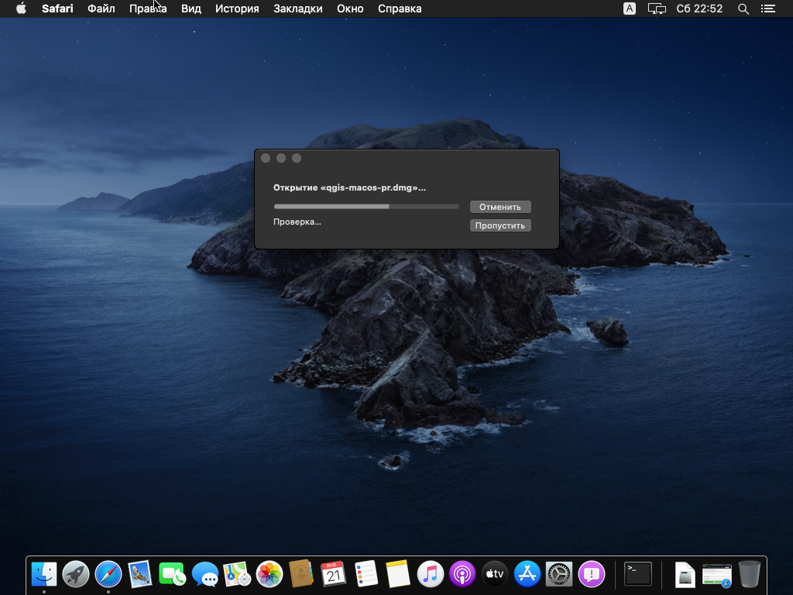
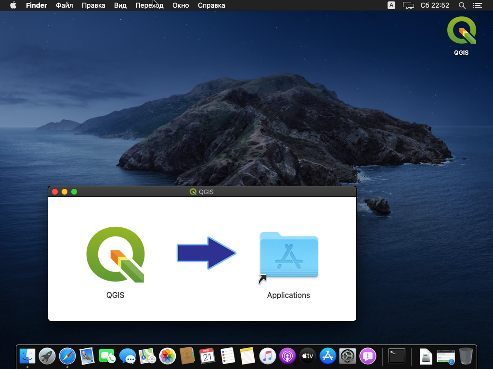
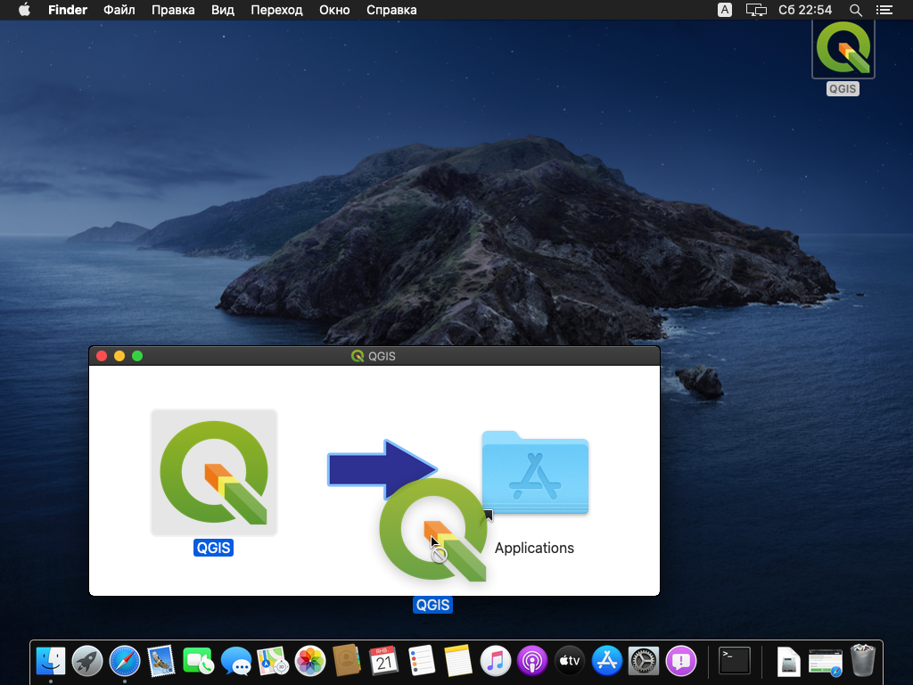

Основы геоинформатики: практикум (QGIS)
2020-03-18
Программное обеспечение для работы
Для работы вам потребуется скачать и установить на свои компьютеры геоинформационное приложение QGIS. Это свободно распространяемое программное обеспечение, для его установки не требуется покупка или регистрация.
Windows
Скачайте с официального сайта последнюю стабильную версию QGIS (3.10). Выберите версию в зависимости от разрядности вашей системы: 64 bit, 32 bit.
Когда исполняемый файл загрузится, запустите его. Если потребуется, разрешите приложению вносить изменения на вашем устройстве.
Будет показано приветственное окно мастера установки.

Нажмите «Далее», чтобы перейти на следующий шаг
На следующем шаге будет показано лицензионное соглашение QGIS и другого программного обеспечения, входящего в пакет поставки.

Нажмите «Принимаю».
На следующем шаге выберите папку для установки. По возможности используйте расположение, предлагаемое по умолчанию.

На следующем шаге предлагается выбрать дополнительные компоненты для установки. Снимите все флажки, кроме QGIS, и нажмите «Установить»

После окончания установки ярлыки QGIS будут добавлены в меню “Пуск” и в отдельную папку QGIS на рабочем столе.

macOS
По состоянию на 2020-03-18 для прохождения практикума рекомендуется использовать альтернативную сборку версии 3.4.12. Перейдя по ссылке, необходимо согласиться сохранить образ установочного диска на компьютер (можно разрешить его сразу открыть средствами DiskImageMounter):

После того как образ загрузится и будет открыт, необходимо последовательно запустить три установщика, выделенные на снимке экрана ниже (именно в том порядке, в котором они пронумерованы!):

Установщики GDAL Complete и QGIS 3 LTR необходимо запускать через контекстное меню и выбирать пункт “Открыть”:

В появившемся диалоговом окне необходимо нажать “Открыть”, чтобы разрешить установку:

Все опции при установке каждой компоненты приложения оставляйте по умолчанию, ничего не меняйте и нажимайте в диалоговых окнах “Продолжить”, пока не запустится установщик.
После того как последняя компонента — QGIS — будет установлена, вы сможете найти приложение и запустить его из каталога Программы macOS:

Linux
Воспользуйтесь инструкциями по этой ссылке.
Дополнительную информацию по установке можно найти на https://qgis.org/ru/site/forusers/download.html.